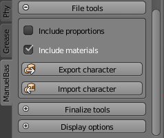

Save and export the character
There are many ways to save or export the character created with ManuelbastioniLAB.
Finalize the character and save it as Blender file
The first method is to finalize the character and then save the blend file, as a normal scene.
In this case the character will be converted in a normal blend model, rigged and ready for further modifications with usual Blender tools.

The detrimental using this way is that the model will lose the specific features of ManuelbastioniLAB. The advantage is that it will be independent from the script, so it can be opened even on a system without ManuelbastioniLAB addon.
Save it directly as Blender file
Alternatively it's possible to save the blend file directly, without finalize the character. In this case, when the lab detects an existing (un-finalized) character in the scene, it automatically tries the re-initialization. If the process turns out well, the lab will show the regular GUI.
This method will preserve the lab features, but you have to bear in mind that in some cases the re-init can fail (for example if the user adds shapekeys, removes vertices, use a different version of the lab, etc..)
Save the character as json database
Exporting the character using the export button is the best way to preserve all features of the lab. Also, it permits to upgrade, convert and restore character, as described here.
All the parameters will be saved in a very slim database, written using a standard json syntax.

Export the character using Blender features
The rigged character can be, of course, exported from Blender using its standard tools.
Each format has advantages and disadvantages, but reimporting a character stored in external formats will cause the loss of lab features in most cases.